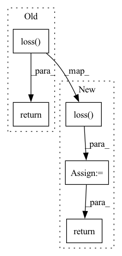

Pattern ID :42199

Before Change
def training_step(self, batch, batch_idx):
y = batch.y
y_hat = self(batch)
return self.loss(y_hat, y)
class GCNModel(pl.LightningModule):
def __init__(self, hidden_dim, num_node_features, num_classes):
After Change
y = batch.y
y_hat = self(batch)
loss = self.loss(y_hat,y)
self.log("train_loss_step",loss)
self.log("train_acc_step",self.accuracy(y_hat,y))
return loss
def training_epoch_end(self,outs):
self.log("train_acc_epoch",self.accuracy.compute())
In pattern: SUPERPATTERN
Frequency: 3
Non-data size: 5
Instances
Fragment ID: 118747451
Project Name: borgwardtlab/togl
Commit Name: aacf22a827d2f07bac04ca41d2c2923fe1f8bc47
Time: 2021-01-13
Author: edward.debrouwer@gmail.com
File Name: topognn/simple.py
M Class Name: FiltrationGCNModel
N Class Name: FiltrationGCNModel
M Method Name: training_step(3)
N Method Name: training_step(3)
M Parent Class: pl.LightningModule
N Parent Class: pl.LightningModule
M File Name: topognn/simple.py
N File Name: topognn/simple.py
M Start Line: 260
M End Line: 262
N Start Line: 210
N End Line: 217
'>
Before Change
token_logits = self.vocab_linear(outputs)
token_logits = token_logits.view(-1, token_logits.size(-1))
loss = self.loss(token_logits, target_text.contiguous().view(-1)).reshape_as(target_text)
if (nll_test):
loss = loss.sum(dim=1)
else:
length = corpus["target_length"] - 1
loss = loss.sum(dim=1) / length.float()
return loss.mean()
def generate_for_corpus(self, eval_data, corpus):
After Change
outputs = self.dropout(outputs)
token_logits = self.vocab_linear(outputs)
loss = self.loss(token_logits.view(-1, token_logits.size(-1)), target_text.contiguous().view(-1))
loss = loss.reshape_as(target_text)
length = corpus["target_length"] - 1
loss = loss.sum(dim=1) / length.float()
loss = loss.mean()
return loss
def generate(self, eval_data):
generate_corpus = []
'>
Fragment ID: 118747450
Project Name: rucaibox/textbox
Commit Name: f1318a5627a1d4b423ec8e5352523c1a4d45d768
Time: 2021-03-09
Author: 37647985+StevenTang1998@users.noreply.github.com
File Name: textbox/model/Attribute/c2s.py
M Class Name: C2S
N Class Name: C2S
M Method Name: calculate_loss(4)
N Method Name: calculate_loss(4)
M Parent Class: AttributeGenerator
N Parent Class: AttributeGenerator
M File Name: textbox/model/Attribute/c2s.py
N File Name: textbox/model/Attribute/c2s.py
M Start Line: 94
M End Line: 121
N Start Line: 89
N End Line: 110
'>
Before Change
def training_step(self, batch, batch_idx):
y = batch.y
y_hat = self(batch)
return self.loss(y_hat, y)
if __name__ == "__main__":
trainer = pl.Trainer(
After Change
y = batch.y
y_hat = self(batch)
loss = self.loss(y_hat,y)
self.log("train_loss_step",loss)
self.log("train_acc_step",self.accuracy(y_hat,y))
return loss
def training_epoch_end(self,outs):
self.log("train_acc_epoch",self.accuracy.compute())
'>
Fragment ID: 118747449
Project Name: borgwardtlab/togl
Commit Name: aacf22a827d2f07bac04ca41d2c2923fe1f8bc47
Time: 2021-01-13
Author: edward.debrouwer@gmail.com
File Name: topognn/simple.py
M Class Name: GCNModel
N Class Name: GCNModel
M Method Name: training_step(3)
N Method Name: training_step(3)
M Parent Class: pl.LightningModule
N Parent Class: pl.LightningModule
M File Name: topognn/simple.py
N File Name: topognn/simple.py
M Start Line: 289
M End Line: 291
N Start Line: 270
N End Line: 277